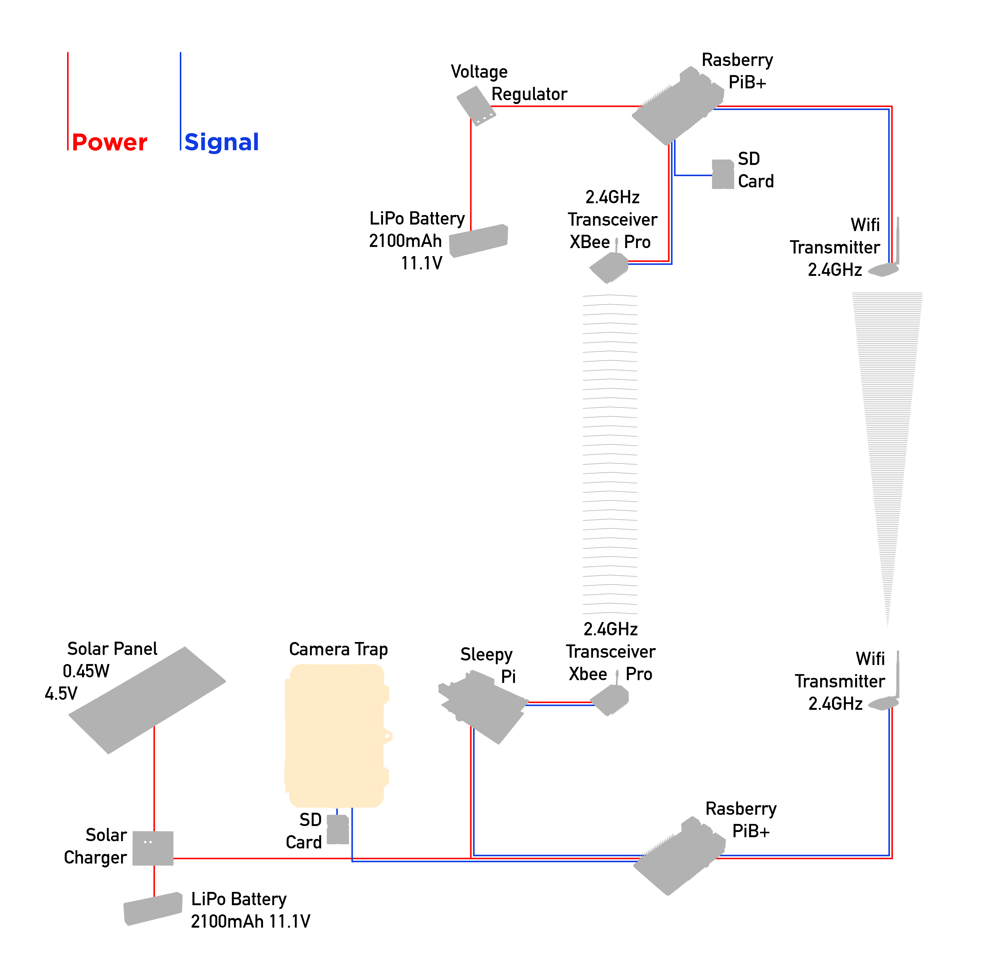
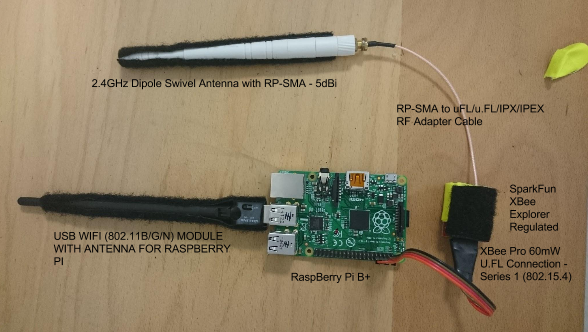
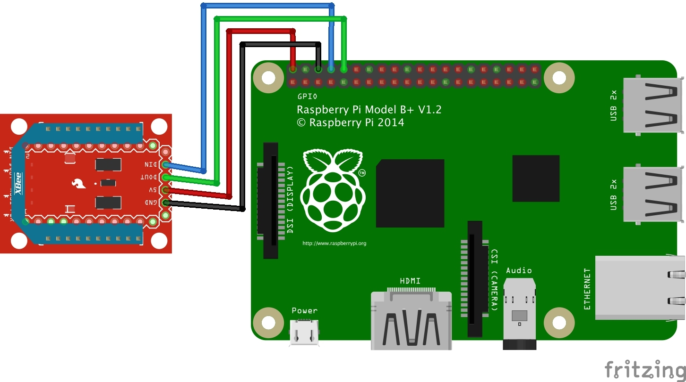
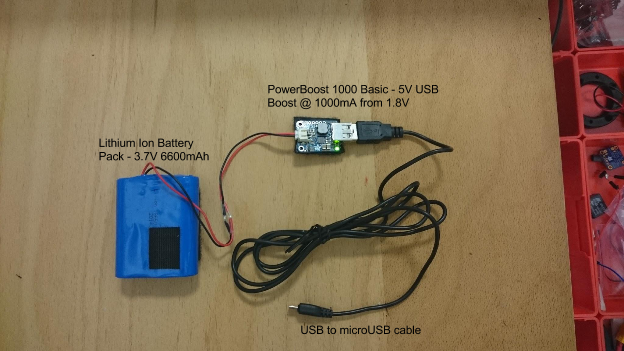
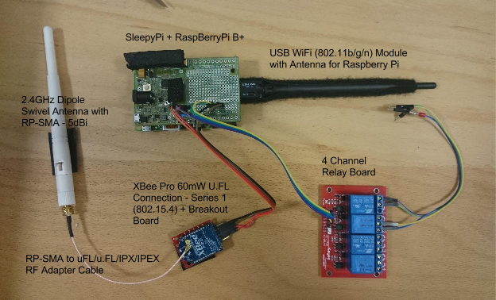
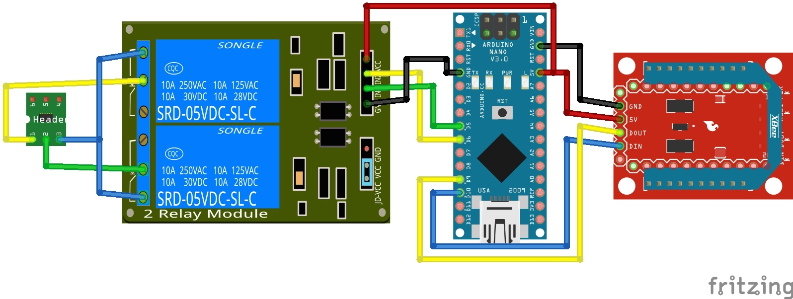
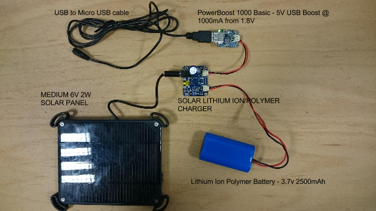

Overview
This portion of the documentation gives a brief overview of the physical circuits and circuit diagrams representing said circuits. This section is a reference for further tutorials, and can be used to verify circuits later on. Furthermore, the hardware presented in the table below may be purchased for constructing your own Wadi Drone.
The diagram below is the overview of the whole Wadi Drone system. This part of the guide will walk you through the set-up of the photo-communication system. The overview for the photo-communication system is shown in the diagram below.

Components Needed
| Component | Quantity |
|---|---|
| 2 Watt Solar Charger Kit | 1 |
| USB / DC / Solar Lithium Ion/Polymer charger - v2 | 1 |
| 2.4GHz Dipole Swivel Antenna with RP-SMA - 5dBi | 2 |
| USB WiFi (802.11b/g/n) Module with Antenna for Raspberry Pi | 2 |
| Lithium Ion Battery Pack - 3.7V 4400mAh | 1 |
| XBee Pro 60mW Wire Antenna - Series 1 (802.15.4) | 2 |
| XBee Pro 60mW U.FL Connection - Series 1 (802.15.4) | 2 |
| RP-SMA to uFL/u.FL/IPX/IPEX RF Adapter Cable | 2 |
| DC Barrel Jack Plug - Male | 4 |
| Raspberry Pi - Model B+ | 2 |
| SD Card - 8GB - SanDisk Ultra microSDHC UHS-I Card with Adapter | 2 |
| Lithium Ion Battery Pack - 3.7V 6600mAh | 2 |
| PowerBoost 1000 Basic - 5V USB Boost @1000mA from 1.8V | 2 |
| Sleepy Pi | 1 |
| SparkFun XBee Explorer Regulated | 2 |
Drone Transmission System Circuit
Drone circuit
Physical circuit of transmission system located on the drone.

Drone circuit diagram
Wiring diagram for the the drone transmission system.

Drone power circuit
Physical circuit of power system located on the drone.

Camera Trap Transmission System Circuit
Camera Trap circuit
Physical circuit of transmission system located on the camera trap.

Camera Trap circuit diagram
Wiring diagram for the the camera trap transmission system.

Camera Trap power circuit
Physical circuit of power system located on the camera trap.
